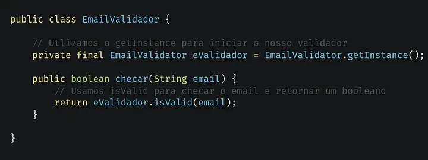
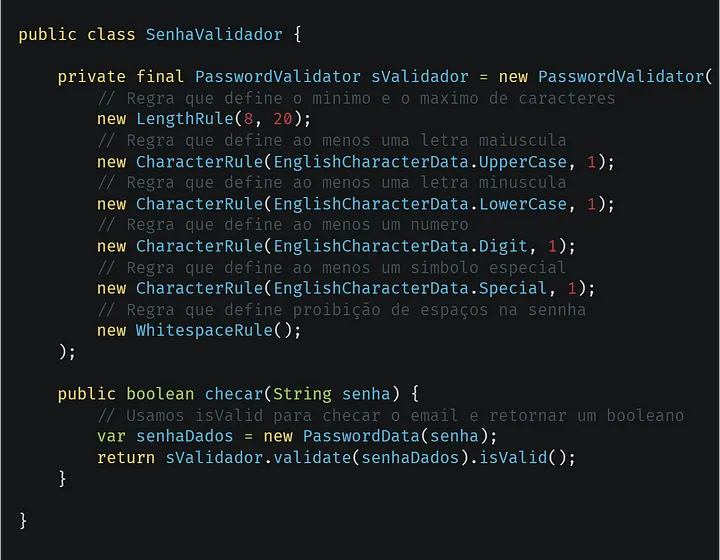

Criando uma API GraphQL com Java Spring Boot — Parte 7: Validação com Apache Commons e Passay
Neste artigo iremos implementar validação de email e senha, usando as bibliotecas do Passay e Apache Commons Validator.
Apache Logo
Validação
Uns dos aspectos mais importantes na criação de softwares, é integridade de dados, isso permite que dados corrompidos, ou dados inválidos não possam ser utilizados, pois isso danificaria o sistema, com isso a validação se tornar um aspecto importante e necessário na inserção de novos dados. A validação checa e filtra possíveis dados inválidos, e assim retorna um erro explicando a razão e a possível solução necessária.
Apache Commons
Apache é uma empresa não-lucrativa, com o proposito de criar e distribuir software de licença livre. Uns do projetos que citamos neste artigo, é o Apache Commons, que é focado em criar componentes Java reutilizáveis para os desenvolvedores. Um dos componentes que iremos usar na nossa API, é o “Validator”, nesta biblioteca temos vários tipos de validadores, mas estamos neste artigo utilizaremos somente o de email. Abaixo um exemplo do Apache Commons Validator.

Exemplo de uso do Apache Commons Email Validator.
Passay
Passay é uma biblioteca para validação de senhas, com ela podemos definir diversos tipos de regras diferentes, abaixo temos um exemplo de uma validação com regras que seguem o padrão de muitos websites.

Exemplo de uso do Passay.
Implementando validação na nossa API
Primeiramente vamos adicionar os validadores ao contexto do Spring através de Beans.
Exemplo de criação dos validadores.
Agora iremos usá-los em nossos controladores.
Exemplo de implementação dos validadores.
Chegamos ao fim do artigo, abaixo deixarei links relacionado ao tópico do artigo.